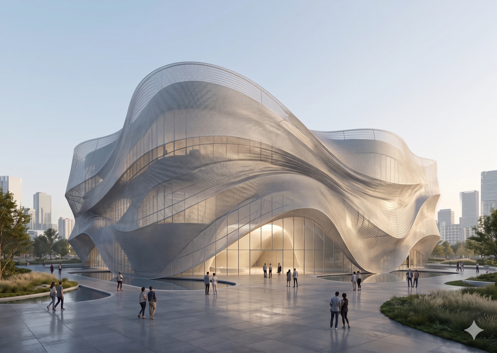
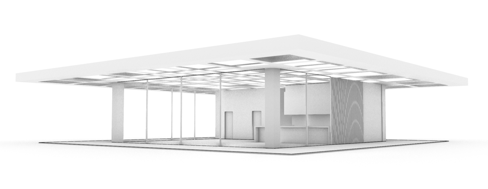
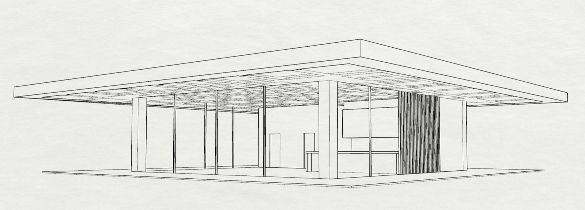
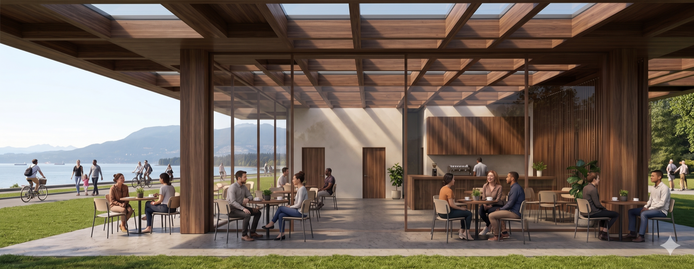

Rendering
General Workflow
- Start With:
Include 1-2 short sentences establishing the overarching goal of your render. State what you want to emphasize the most (ex. Light diffusion from the facade to create a serene interior atmosphere).
- Optionally Add:
- Markup on top of reference image by placing an arrow where viewpoint should be taken
- Mood boards for material and atmosphere
- Use Strong Prompt Structure in Bullet Points:
[building type + design intent/conceptual goal]
[massing + geometry]
[materials]
[lighting]
[camera composition]
[site context]
[human activity]
[rendering style]
Example
CAD Screenshot Inputs




Prompt
“Based on the reference images, create a photorealistic render to emphasize the relationship between natural light, warmth, and community within the cafe space. Focus on soft light diffusion through the glazed facade and waffle wood roof to create a calm, inviting atmosphere that highlights the contrast between the sheltered interior cafe and the open patio surrounding it.
Details:
- small stand-alone cafe with a waffle roof to let natural light in while diffusing it
- Maintain the geometries from the reference image
- Dark walnut waffle roof with glass walls
- Natural lighting on a sunny day
- Take the viewpoint looking straight at the front left wall
- Site context is a grass pad overlooking the Vancouver Sea Wall
- Lively space with groups of people at each table on the patio and people walking by the seawall
- Photo-realistic render”


Key Components For Iteration